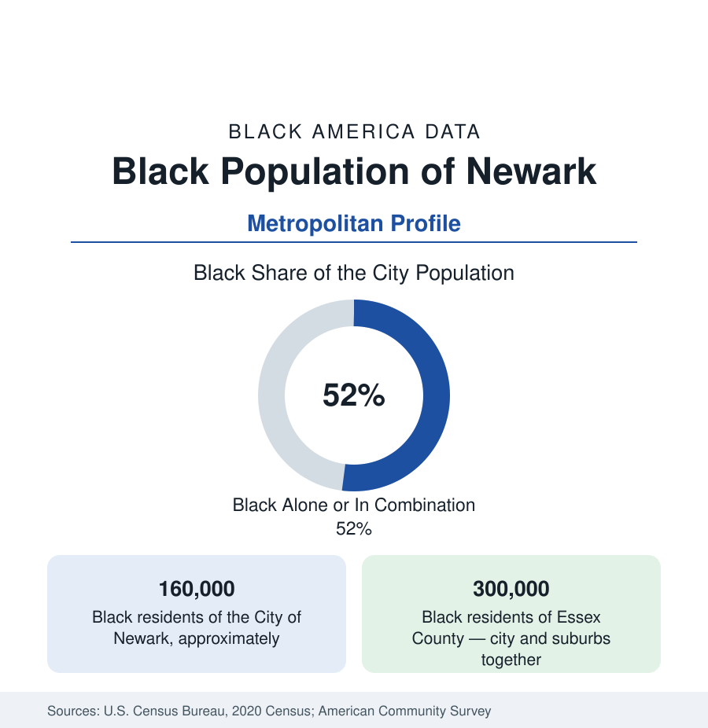

Black Cities
Black Newark: Half the Brick City
Newark holds about 160,000 Black residents — half the city — at the center of Essex County's great Black suburban landscape. The census profile.

Newark holds about 160,000 Black residents — Black alone or in combination, roughly half of the city's 311,000 people — and sits at the center of an Essex County Black population of about 300,000, the densest Black county landscape in the Northeast outside the five boroughs. Newark's Black community was built by the Great Migration into the Central Ward, remade by the rebellion-era upheavals and the suburban exodus that followed, and is now the anchor of a city in partial, uneven revival. This article profiles the population in the census data.
The Central Ward and the Making of Black Newark
Black Newark's historic center is the Central Ward — the Third Ward of the older maps — where the migration-era community concentrated around Springfield Avenue's commercial strip: the churches, the Krueger-Scott mansion's era of Black business aspiration, the jazz clubs, and the dense blocks of the old Jewish and then Black west side. The 1967 rebellion, centered in the Central Ward, became the hinge of the city's modern history in the data: the population, 375,000 at mid-century, fell to under 280,000 within two decades; white and middle-class Black departure to the suburbs accelerated together; and the ward's built fabric thinned through abandonment and clearance. What replaced it, across the following generation, was substantial public and subsidized housing construction and then, in the recent decades, market-rate infill — the Central Ward today is again the city's most-built district, its census tracts showing the section's familiar two-speed pattern.
The Wards Today
The modern city's Black geography spans all five wards with different characters. The South Ward, the largest Black population center, holds the stable homeowner districts of Weequahic — once the city's Jewish middle-class heartland, Black since the 1960s, with its park and its high school's famous alumni — and Clinton Hill. The West Ward (Vailsburg, Ivy Hill) is the city's most suburban-feeling Black landscape, adjoining the Essex suburbs. The North Ward, historically Italian, is now substantially Latino with a significant Black population; the East Ward, the Ironbound, is the Portuguese and Latino district. The Central Ward remains the institutional center: Rutgers-Newark and NJIT, the New Jersey Performing Arts Center, the public library's Charles F. Cummings branch with its New Jersey Hispanic and African American collections — the downtown revival's anchors sit inside the historic Black ward's boundaries.
The Essex Suburbs: The Other Half of the Story
Half of Black Essex County lives outside Newark, in the suburban landscape the state profile names: East Orange and Irvington, each more than four-fifths Black, each a full city of 60,000 to 65,000 with its own Black civic infrastructure generations deep; Orange; Montclair, the region's showcase integrated suburb; and the Caldwells, Bloomfield, and West Orange with growing shares. The county's aggregate data therefore resist summary: Black Essex contains both some of New Jersey's most difficult neighborhood indicators (in Newark's and East Orange's hardest tracts) and some of its strongest Black suburban medians. The port and airport economy — Port Newark-Elizabeth and Newark Liberty, among the largest employment complexes on the East Coast — and the logistics belt along the Turnpike employ the county's Black workforce at every tier, while the Manhattan-facing professional class commutes from the suburbs through Penn Station.
Composition and Change
Newark's population has grown across the last two censuses — the city passed 300,000 again — and its Black population with it, joined by one of the Northeast's larger African immigrant communities (Nigerian and Ghanaian above all) and a long-established Caribbean population. The Black share edges down as the Latino population grows faster, in the corridor pattern. The indicators record the city's split state: downtown investment and a rising median in the renewal districts, against a citywide Black poverty rate still near a quarter and health outcomes at the hard end of the state's tables — the two Newarks that every local dataset describes.
Reading the Newark Numbers
Newark is best read as a county profile wearing a city's name: 160,000 Black residents in the city, 140,000 more in its immediate suburbs, one labor market, one housing history. The Brick City's data improve as the frame widens — and the tracts keep the honest account of where the revival has and has not arrived.
More in Black Cities
Black Atlanta: Population, Distribution, and Growth of a Black Metropolis
Metro Atlanta holds more than two million Black residents — roughly one in three, second only to New York. The suburban distribution, migration history, and composition of Black Atlanta in the census data.
Black New York: The Largest Black Population in America
The New York metropolitan area holds about 3.4 million Black residents — more than any metro in the nation — and the city itself about two million. The census profile.
Black Washington: The District and the Metro
The Washington metro holds about 1.6 million Black residents, and the District itself — long a majority-Black city — now records a Black share near 41 percent. The census profile.
Source: U.S. Census Bureau, 2020 Census; American Community Survey; Population Estimates Program.